Black
phyllid nudibranch
Phyllidiella
nigra
Family Phyllidiidae
updated
May 2020
Where
seen? This small black nudibranch with pink bumps is among the more commonly encountered
on our Southern shores, near coral rubble and reefs.
Features: 4-5 cm long. Body long,
hard with bumps (called tubercles) that are evenly distributed throughout
its body (not clustered in groups or in ridges along the body). The
bumps are tall and rounded, are pink to red near the tips, but black
where they join the body. The short rhinophores are black. When disturbed,
it secretes a milky substance. The broad foot on the underside is
bluish and does not have a line along the centre. |

Kusu Island, Feb 05 |
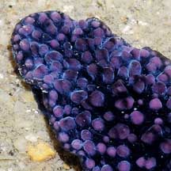
Milky substance secreted when disturbed. |
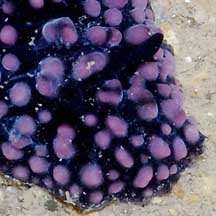
Short black rhinophores. |
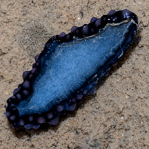
Underside plain (no stripe or markings).
Pulau Hantu, Mar 06 |

A pair of oral tentacles on the underside.
Sisters Island, May 07
|
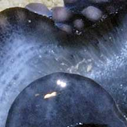
Gills hidden under the body. |
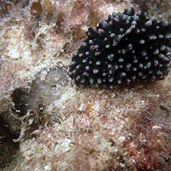
'Hole' from where it just fed?
Terumbu Bemban, Jun 20
Photo shared by Dayna Cheah on facebook. |
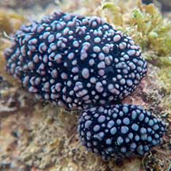
Mating?
St. John's Island, Apr 22
Photo shared by Jonathan Tan on facebook. |
|
| Black
phyllid nudibranchs on Singapore shores |
| Other sightings on Singapore shores |
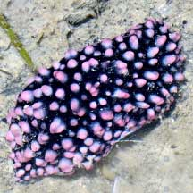
East Coast Park (B), Jun 21
Photo shared by Loh Kok Sheng on facebook. |
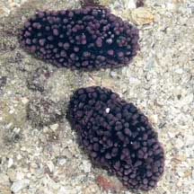
Sentosa, Jul 08
Photo shared by Loh Kok Sheng on his
blog. |
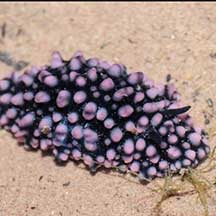
Sentosa Tg Rimau, Apr 21
Photo shared by James Koh on flickr. |
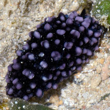
Big Sisters Island, Feb 26
Photo shared by Loh Kok Sheng on facebook. |
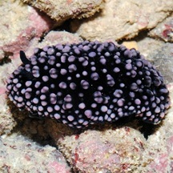
Terumbu Selegie, Jun 11
Photo shared by Loh Kok Sheng on his
blog. |
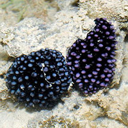
Pulau Hantu, May 13
Photo shared by Loh Kok Sheng on flickr. |
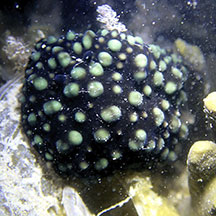
Pulau Semakau (North), Apr 16
Photo shared by Jialin Liu on facebook. |
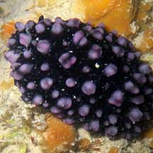
Pulau Semakau, Feb 09
Photo shared by Loh Kok Sheng on his
blog. |
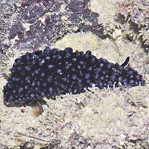
Pulau Tekukor, Jun 16
Photo shared by Loh Kok Sheng on facebook.
|
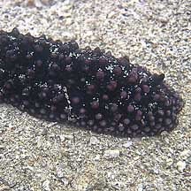
Terumbu Semakau, Jun 10
Photo shared by James Koh on his
blog. |
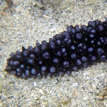
Terumbu Semakau, May 10
Photo shared by Loh Kok Sheng on his
blog. |
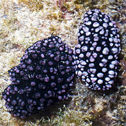
Terumbu Bemban, Jul 11 |
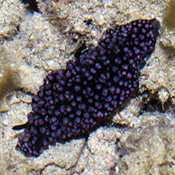
Terumbu Pempang Laut, Aug 16
Photo shared by Loh Kok Sheng on facebook. |
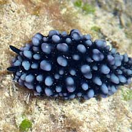
Beting Bemban Besar, Apr 10
Photo shared by Loh Kok Sheng on his
flickr. |
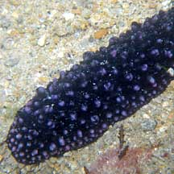
Terumbu Bemban, Jun 10
Photo shared by Loh Kok Sheng on his
flickr. |
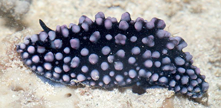
Terumbu Bemban, Jun 15
Photo shared by Marcus Ng on facebook. |
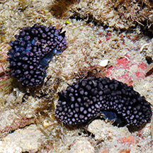
Seringat-Kias, Nov 14
Photo shared by Loh Kok Sheng on facebook. |
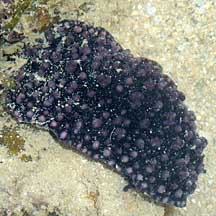
Terumbu Berkas, Jan 10
Photo shared by Loh Kok Sheng on his
flickr. |
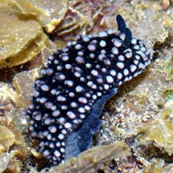
Pulau Salu, Apr 21
Photo shared by Loh Kok Sheng on facebook. |
|
Links
References
- Tan Siong
Kiat and Henrietta P. M. Woo, 2010 Preliminary
Checklist of The Molluscs of Singapore (pdf), Raffles
Museum of Biodiversity Research, National University of Singapore.
- Wells, Fred
E. and Clayton W. Bryce. 2000. Slugs
of Western Australia: A guide to the species from the Indian to
West Pacific Oceans.
Western Australian Museum. 184 pp.
- Coleman,
Neville. 2001. 1001
Nudibranchs: Catalogue of Indo-Pacific Sea Slugs. Neville
Coleman's Underwater Geographic Pty Ltd, Australia.144pp.
|
|
|